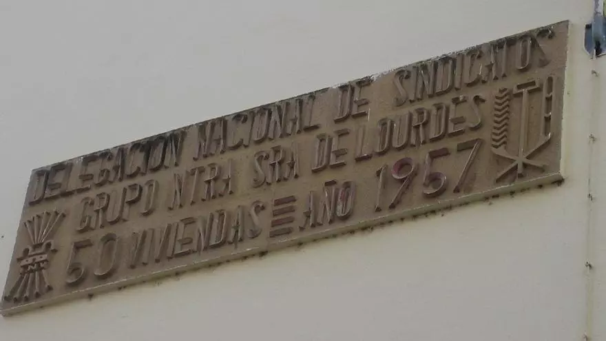
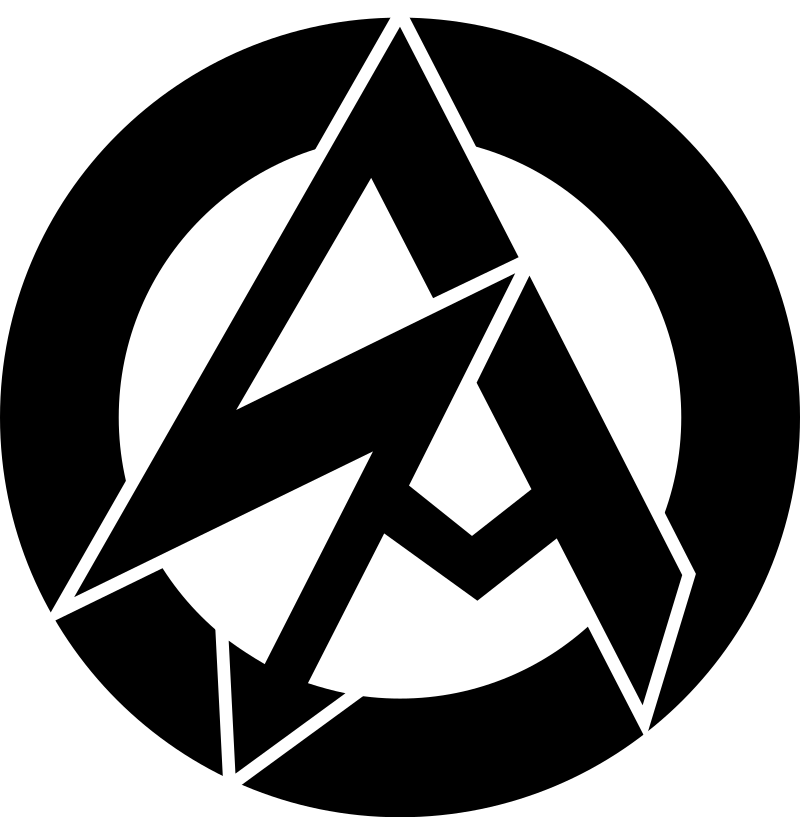

#Rusia Vs #Ucrania | Revista Ejércitos @REjercitos
Revista Ejércitos (@REjercitos)
Jesús Manuel Pérez Triana @jpereztriana | @REjercitos
Descifrando la Guerra @descifraguerra
jpartej @jpartej
Poderío Militar @PoderioMilitar
Juanjo Fernández @Juanjo_Writterr
Alonso de Lanzós @AlonsodeLanzos Historia militar y naval.
J.Victor Fauli @Victor35571262 Piloto de Drones o RPAS (Remotely Piloted Aircraft System)
Joaquín Rivera Chamorro oficial de enlace en una brigada turca hace cuatro años, la mentalidad de los militares está muy influenciada por Ataturk, a quien consideran el máximo referente: “europeización, laicismo y modernización”. Máxima preocupación con lo que está pasando en Estambul. La situación puede escalar peligrosamente.
defensayseguridad.es @defyseguridad
Hora Zulú
Mayday señal de socorro se repite tres veces (mayday, mayday, mayday)
El término se acuñó como adaptación gráfica al inglés del verbo francés en su forma pronominal m'aider («ayudadme», en francés)
Alfabeto NATO | OTAN
OTAN Protocolo colocación fotos Presidentes
Significado de las banderas en los barcos
Himnonacional.org -Himno/Marcha Real/Militares
Un espía en el Congreso
El mando militar de ciberdefensa
El HAARP y la bomba del arco iris:
Lanzamisiles SILAM español es mejor que el poderoso HIMARS de EEUU
Mistral III, los certeros misiles antiaéreos
Así sería la defensa antiaérea de España ante un ataque como el de Irán a Israel youtube
Patriot a 100km.| HAWK a 40km. | NASAM a 25km. | Mistral a 6km. | cañones antiareos 3590
F18 y EuroFighter misiles aire-aire Airis T Meteor | AMRAAM Fragatas F100 Sistema AEGIS y misiles SM y ESSM
Defensa revela el calendario del dron Sirtap (Sistema Aéreo Remotamente Tripulado Táctico de Altas Prestaciones) primer vuelo este 2025 e inicio de las entregas en 2026
El RPAS será el primer sistema aéreo no tripulado Clase II/III de diseño, desarrollo y producción completamente en España
UAS" (Unmanned Aerial System) se refiere a un sistema aéreo no tripulado, que incluye la aeronave (UAV o drone)
Un RPAS (Remotely Piloted Aircraft System) es un sistema de aeronave pilotada a distancia, que incluye la aeronave, la estación de control remoto, los enlaces de comunicación y otros componentes necesarios.
En esencia, un RPAS es un dron, pero el término RPAS se refiere al sistema completo no solo a la aeronave en sí.
NASAMS Sistema de misil antiaéreo avanzado AMRAAM
HAWK Sistema de misil antiaéreo
F18 y EuroFighter misiles aire-aire Iris-T Meteor | AMRAAM
(Infra Red Imaging System Tail/thrust Vector-Controlled)
misiles aire-aire Iris-T Meteor | AMRAAM
Fragatas F100 Sistema AEGIS y misiles SM1 | SM2 y ESSM
Dragón, el blindado español más moderno y versátil
La empresa sevillana Iturri se adjudica contrato del Ejército de Tierra para suministrar hasta 4.500 vehículos militares todoterreno tácticos (VMTT)
Vehículos Militares Todoterreno Tácticos (VMTT) DESCARTADOS
Jammers, Jamming, STANAG 4285 de la Otan -Guerra Electrónica
El sistema de misiles ruso Bastión o ¿qué pasó con el Donald Cook? -Guerra Electrónica
Sistema de Guerra Electrónica | Armada
¿Qué asustó tanto al USS Donald Cook en Mar Negro? sistema Jibiny -Guerra Electrónica
Protección electrónica comunicaciones del ejército de Rusia es el sistema Borisoglebsk-2
Atentados del 11S: Dimitri.A.Khalezov
Atentados del 11S: Desmontando teoría oficial
Poderío Militar: -poderiomilitar-jesus.blogspot.com
Armas -Foro Militar General
Armamento Ejercito España
Infodefensa.com/es/ -info actualidad militar
Revistaejercitos.com
Marruecos, Canarias y las Zonas Económicas Exclusivas – Revista Ejércitos
Marruecos – Armamento nuevo
Argelia-Marruecos| Conflictos Contemporáneos
Galaxiamilitar.es
El Radar - Info sobre defensa
Cazas y Helicopteros
Helicóptero de ataque ruso Mi-28N vs Apache estadounidense
MH-60R helicoptero antisubmarino 'Romeo' debe llegar a España
Alpha 900 el moderno (y versátil) helicóptero español sin piloto
Fly News información aeroespacial y de defensa en español
The Aviationist
FCAS
FCAS | SCAF la toalla arde entre Dassault Aviation y Airbus DS
FCAS | SCAF | MGCS Super-Rafale, Mirage NG: Francia debe estudiar una alternativa a mediano plazo a SCAF
FCAS | SCAF (système de combat aérien du futur) El jefe de Dassault confirma el retraso
F-35 Lockheed Martin empezaron a hacer control de daños era Trump @jpereztriana
Kaan turco o el KF-21 surcoreano del que ya vuelan prototipos @jpereztriana
Lente de Luneburg: el secreto detrás del camuflaje y detección de aviones furtivos La lente de Luneburg manipula ondas electromagnéticas mediante un índice de refracción variable
sección transversal de radar (Radar Cross Section o RCS, por sus siglas en inglés)
Sukhoi Su-57 Felon
Lockheed Martin F-22 Raptor F-117 Nighthawk | B-2 Spirit | F-22 Raptor | B-21 Raider UAV Gerbera señuelo radar con una Lente de Luneburg Shahed 136- De Mehr
Lente de Lüneburg lente esférica que tiene la propiedad de concentrar los rayos de una onda plana incidente en un punto de su superficie.
Northrop Grumman B-21 Raider Bombardero de Ataque de Largo Alcance (Long Range Strike Bomber, LRS-B)
Programa Halcón: Consejo Ministros aprueba compra 20 Eurofighter como sustitutos de los F/A-18
Eurofighter (y Airbus) en la encrucijada: al caza europeo se le atraganta la competencia
Así serán los nuevos Eurofighter Tranche 4+ que ha comprado España: fuertemente armados y casi invisibles al radar
Eurofighter Tranche 4 para competir con el F-35
susbsistema de defensas “Praetorian” o DASS (Defensive Aid Sub-System) y que incorpora de forma modular ESM – RWM (Electronic Support Measures - Radar-Warning-Receivers), que alertan al piloto cuando está siendo detectado por un radar enemigo o se captan emisiones activas. También incorpora alertador de laser (LWR), alertador de misil entrante o Missile Approach Warner (MAW), contramedidas electrónicas (ECM) y gestión de defensas, con lanzamiento inteligente de chaff (contra misiles guiados por radar) y bengalas (contra misiles infrarrojos) radar CAPTOR (de tecnología AESA)
Así son los nuevos Eurofighter del Ejército del Aire que se basarán en Gando
Eurofighter versión EK, de combate electrónico misiones SEAD (supresión de defensas aéreas enemigas)
Así sería una "pelea de perros" dogfight entre los nuevos cazas Eurofighter Tranche 4 que ha comprado España, y el F-16 Block 70/72 de Marruecos
¿Medio centenar de F-35 para España? Activar en FF modo lectura (es subscripción)
F-35 Vs Eurofighter – Ejércitos.org
F-35 Lightning II portierramaryaire.com • Ver Tema
F-22, F-35 y B-2 ¿Son los aviones realmente “invisibles”? – Al Manar
F-35 Turco vs SU-35 Turco
Indonesia alarmada por los datos que puede facilitar el F-35 al gobierno de Estados Unidos
el software del F-35 otorga al Pentágono una capacidad única para supervisar estos aviones incluso cuando son desplegados por otras naciones, incluidos los aliados de Estados Unidos.
Esta supervisión es posible gracias a los sistemas de datos y apoyo incorporados concretamente a través del Sistema Autónomo de Información Logística [ALIS] Autonomous Logistics Details System y su versión mejorada, la Red Integrada de Datos Operacionales [ODIN]
¿Pueden los EE.UU. dejar en tierra los F-35 de los países europeos?
El mecanismo “Kill Switch” Naciones europeas en peligro.:
Vulnerabilidad del LINK 16 Otra vulnerabilidad potencial reside en el control que ejerce Estados Unidos sobre la liberación de claves criptográficas para el protocolo de comunicación Link 16 que utilizan los sistemas de caza y defensa aérea de la OTAN.
El ‘interruptor de apagado’ del F-35 podría permitir a Trump inutilizar la fuerza aérea europea [ING]
Un botón a mano de EEUU amenaza con inutilizar de la noche a la mañana los mejores cazas europeos
El caza furtivo F-35 no dispone de un botón de apagado a distancia, pero tiene los MDF (archivos de datos de misión)
los MDF se procesan a través del ALIS (Sistema de Información Logística Autónoma) y de su sucesor, la ODIN (Red Integrada de Datos Operacionales)
Europa debe evitar el uso militar de tecnología americana: “Es un peligro enorme"
En septiembre de 2023, la interrupción intencionada de su servicio de internet saboteó un ataque naval ucraniano contra la flota rusa en el mar Negro. Musk dio instrucciones en secreto a sus ingenieros de StarLink para desactivar el acceso a la red en Crimea, inutilizando totalmente los drones acuáticos ucranianos en ruta al puerto de Sebastopol.
Fragata alemana intentó derribar un dron americano y los dos misiles que le lanzaron fallaron:
Misil crucero Storm Shadow británico se convierte en un «bloque inerte» sin la información de EE.UU.
Ejemplos históricos armamento con puertas traseras:
- F-16 vendidos por EEUU a Pakistán, llevan un software que detecta intentos de modificación de armas si van ser usados contra EEUU o la India. En 2019 EEUU bloqueó los F16 pakistaníes tras el derribo de un avión indio.
- Misiles Exocet AM39 durante la guerra de las Malvinas, Francia bloqueó muchos de los códigos de activación de los Exocet convirtiéndolos en pisapapeles. Es cierto que hubo varias unidades que consiguieron 'hackear' y activarlos, y les hicieron un roto a la royal marine pero la mayoría quedaron sin poder usarse.
- Unidades del AH-64 Apache y F-15 vendidos a Arabia Saudita llevan estos sistemas, es curiosos este caso porque sí es público.
- Más recientemente, antes de la caída de Assad los rebeldes se habían hecho con varios S300 que había en Siria e intentarion usarlos contra los aviones rusos que los estaban bombardeando pero no consiguieron activarlos ni los radares ni los sistemas de lanzamientos (habían tomado de prisioneros a varios operadores sirios para ello), en los OSINT se especula que se hubiesen bloqueado a distancia.
- Varios TB2 Bayraktar que fueron interceptados y tomado el control por Rusia usando guerra electrónica se sabe que se autodestruyeron antes de poder aterrizar en una base rusa para estudiarlos, lo interesante de esto es que los TB2 no tienen la funcionalidad de autodestrucción para el país que lo opera, lo cual hace indicar que fueron los propios turcos quienes enviaron esa orden al ver el cambio de rumbo.
Sukhoi Su-30
Sukhoi Su-30MKI Sukhoi Su-30 India
Rafale Dassault Rafale
Rafale Review
Rafale Review
S-400 vs Rafale: Turquía desplegará misil ruso S-400 para contrarrestar Rafale franceses
Los aviones Rafale esquivan todos los radares, sistemas de defensa aérea; bombardea instalaciones turcas en Libia
El Rafale M se habría impuesto al Super Hornet F18 como el favorito de la Armada India
IAF cuenta con 1 misil en el caza Rafale para contrarrestar a China Misil Meteor
Argentina necesita cazas supersónicos, pero no ahora – Conclusion
misil Sea Dart sin objetivo mismo país. El radar pasivo del misil reconoció el IFF (Identification Friend or Foe) de un avión de su mismo origen nacional. Y el IFF no es nada nuevo: es un traspondedor cuya primera versión data de 1940. Ni mamados los británicos nos iban a vender un sistema capaz de ser usado en su contra.
Argentina necesita cazas supersónicos, pero no ahora - Conclusion
Veto de componentes y sistemas: EEUU arrincona a Colombia contra la selección del Gripen
La nación norteamericana bloquearía en primera medida el uso del motor General Electric F414G
Eutelsat firma con Mitsubishi Heavy Industries para múltiples lanzamientos del H3
Este es el primer acuerdo entre Eutelsat y MHI y demuestra que Eutelsat está diversificando sus proveedores de lanzamiento
Qué es Eutelsat la empresa europea que compite con Starlink
¿El Miura 5 es el misil termobárico español?
PLD Space sella un acuerdo para lanzar el Miura 5
Misil Meteor Eurofighter Typhoon | Dassault Rafale | Saab 39 Gripen | (posible F-35)
Un contrato de 110 millones de dólares para soporte logístico del Predator B español (MQ-9A)
Radar_AESA
Así será el gran desfile aéreo del Día de la Fiesta Nacional, avión por avión
España prevé adquirir un primer lote de 22 radares AESA para sus Eurofighter
Las opciones para el futuro del Ejército del Aire – Galaxia Militar
Precio de cada uno de los misiles y bombas aire- Pentágono – Galaxia Militar
Leopard 2E Carro de combate
MGCS | Main Ground Combat System destinado a diseñar el reemplazo de los tanques alemanes Leopard 2 y franceses Leclerc
Stridsvagn 122 (Carro de Combate 122) es el carro de combate principal del Ejército de Suecia. Está basado en el Leopard 2
Active protection armor Arena - E Carro de combate -youtube
Las pruebas del VCR 8x8 allanan el camino para la firma del contrato
Foro Naval -Facebook
Armada: Infanteria de Marina – renovación material: HK416, Glock 17
Armada: La necesidad de una segunda cubierta – Fuerza Naval
Armada: Historia del navío de línea Santísima Trinidad
Armada: Modelo de astillero, arsenal o de construcción
S-80 no estarán armados con misiles NASAMS sino con misiles NSM de la compañía noruega Kongsberg Los primeros NSM se prevén para 2027. Misiles NSM Son misiles de última generación. Tienen un alcance de unos 200 kilómetros velocidad de 0,9M
S-80 Presente de un submarino para el futuro (PDF)
S-80 El sistema AIP el arma secreta que convierte el S-80 en un submarino único y la baza de Navantia para su exportación
nombre comercial de BEST (Bio Ethanol Stealth Technology)
S-80 La debilidad submarina española y la clase S-80 | Descifrando la Guerra
S-80 Tercer webinario de IDS Connect COMPLETO | Análisis del programa S-80
Submarinos Clase S-80 Plus -foronaval.com (24/05/2013)
Submarinos Clase S-80 Plus -Fede Supervielle Twitter
Submarinos Clase S-80 Plus -wikipedia
Submarinos Clase Scorpène -wikipedia
Submarinos chilenos clase Scorpène
Reino Unido admite el punto flaco de sus submarinos nucleares
Los misiles Trident disparados por los submarinos se construyen, suministran y mantienen en Estados Unidos
Trident (programa nuclear del Reino Unido)
El futuro de la guerra antisubmarina (ASW | Anti-Submarine Warfare)
Aviación antisubmarina
¿Cuántos países tienen portaaviones? Éste es el “selecto” grupo que incluye a España
El próximo portaaviones francés comienza a tomar forma
El Proyecto del portaaviones español SAC 220
Nuevo radar para las fragatas españolas: el más avanzado en guerra naval
Inteligencia, Espionaje y Servicios Secretos
BASE MILITAR CNI | Lo que el CNI esconde en la misteriosa base militar 'El Doctor', el Área 51 española
Antenas de El Doctor (centro de estudios de propagación radioeléctrica) Área 51 española
El Doctor | Área 51 española
‘La Marañosa’ o por qué España es referencia internacional en innovación militar y desarrollo tecnológico
Instituto Tecnológico «La Marañosa»
BEAC (Bomba Explosiva de Aire Combustible) España potencia destructiva similar a la de las bombas atómicas
La BEAC fue probada por España en el desierto de Atacama (Chile)
Lewis Strauss, el enemigo eterno de Oppenheimer, el padre de la bomba atómica
El error de un Nobel que condenó el proyecto atómico nazi
Algunos culparon a Werner Heisenberg por descartar el grafito como neutralizador del Uranio en favor del agua pesada<. Pero fue culpa de un error de calculo de Walther Bothe que ganaría el premio Nobel en 1954
Institutodeestrategia.com
Bases secretas nazis: Episodio 2 | Dplay -video
El error de un Nobel que condenó el proyecto atómico nazi
En el interior del U-995, submarino alemán de la 2GM
Un grupo de republicanos españoles exiliados ayudó a descifrar Enigma
El descifrado de Enigma fue un esfuerzo colectivo en el que los españoles del Equipo D jugaron un papel fundamental. Por desgracia en España hoy casi nadie los conoce y no tienen ningún monumento. Vaya este humilde hilo en su memoria.
Sus nombres eran:
-Faustino Antonio Camazón -Carmelo Estrada Manchón -Jaime Barba Claramunt -José Díaz Rodríguez -Manuel Inglada Díaz -Cantero Medina -Andrés Martínez Benito
Fuentes para saber más: El espía de Valladolid que luchó contra Enigma:
Documental: Equipo D: Los códigos olvidados (RTVE) (documental ya no presente)
Los siete de Camazón (Antonio Camazón. Su habilidad: descifrar códigos.)
El criptógrafo español (Antonio Camazón) que ayudó a descifrar Enigma:
Los siete de Camazón (Antonio Camazón. Su habilidad: descifrar códigos.)
Sun Tzu: El Arte de la guerra
Los 10 aviones de combate más caros del mundo : Aviageek
Dioramas Militares (la guerra a escala) -forocoches
El códice Wallerstein manuscrito armas del siglo XV escaneado
El códice Wallerstein -lucha cuerpo a cuerpo siglo XV
El códice Wallerstein -lucha cuerpo a cuerpo siglo XV -varios alemania
Visor cartográfico militar de España
Historia Militar -foro
Augusto Ferrer-Dalmau (Madrid, 1964)
Jordi Bru @Jordibrufotos Fotografía histórica militar
Las 110 mejores frases de Sun Tzu (El Arte de la Guerra)
La OTAN prepara la mayor operación de intoxicación de la Historia -Siria
Varios militares nazis fueron altos mandos de la OTAN
Adolf Heusinger
Varios militares nazis fueron altos mandos de la OTAN
Johannes Steinhoff
Ascenso de Adolf Hitler al poder
Operación "Paperclip", nazis al servicio de Estados Unidos
En vista de los conflictos que amenazaban Occidente, y a una más que posible guerra, Dulles, jefe de la CIA desde 1952 necesitaba disponer de un agente especialista en los trasfondos soviéticos. Para ello contó con los servicios de Reinhard Gehlen
Durante la Segunda Guerra Mundial, Gehlen fue jefe de la contrainteligencia alemana en el frente ruso y junto con otros excamaradas alemanes creó la Organización Gehlen uno de los ejes de las operaciones secretas de la OTAN.
Una de las operaciones más famosas fue la llamada Operación Gladio. Ésta se llevó a cabo básicamente en Italia, donde el Partido Comunista era muy poderoso.
Entre sus organizadores se sospecha que estuvo el agente italiano Licio Gelli, el legendario jefe de la logia masónica P2 implicado años después en el escándalo del Banco Ambrosiano.
“Reinhard Gehlen creó la Organización Gehlen, uno de los ejes de las operaciones secretas de la OTAN".
Operación Osoaviajim (en ruso se conoció como Operazija) el traslado forzoso a la URSS de miles de científicos y técnicos alemanes en 1946
Cinco mitos estadounidenses sobre la victoria contra el nazismo
La Conferencia de Yalta (Crimea 1945) el inicio de la Guerra Fría
La Conferencia de Yalta (Crimea 1945) el inicio de la Guerra Fría
Las Conferencias de Yalta y Potsdam, antecedente de los derechos humanos
Banderas defensores Zaragoza durante 2° asedio francés (21DIC1808 al 21FEB1809): las fuerzas regulares
La Murcia militar – EL VIAJERO HISTÓRICO [Cartagena base naval]
ERC pide retirar la cruz de San Andrés de los aviones del Ejército del Aire
¿Por qué ERC quiere quitar la cruz de San Andrés de los aviones del Ejército del Aire?
CARTA DE UN OFICIAL DEL EJÉRCITO DEL AIRE A LOS SEISCIENTOS ALTOS MANDOS DE LAS FUERZAS ARMADAS QUE FIRMAN EL MANIFIESTO DE ADHESIÓN A LA MEMORIA DE FRANCO
NUEVO ATENTADO CONTRA F18 EN MADRID | DESPERTARES - La revolución pacífica
23-F / ¿Estaba el "elefante blanco" a las órdenes del Rey?
España y las armas nucleares
Pastillas de yodo en caso de catástrofe nuclear: ¿Valen las de la farmacia?
60 años de la crisis de los misiles: documentos inéditos revelan lo cerca que estuvo el mundo de la catástrofe nuclear
Taqiyya, mentir en nombre de Alá | GEES
Aprobada la ley que regula la venta de productos que pueden servir para explosivos
Los Exocet el arma más temida por los británicos en Malvinas y el francés despechado que los hizo funcionar a último momento
Sobre cómo evitó Kodak una III Guerra Mundial y acabó en la quiebra
Franquismo.:
FUNDACIÓN NACIONAL FRANCISCO FRANCO
Generalisimofranco.com
Fundación Franco y otras siete asociaciones fascistas que perviven en España
Simbolos franquistas -imagenes
deberiadesaparecer.com -localizacion placas en viviendas, calles, inscripciones o escudos
El mapa del franquismo que aún pervive: al menos 5.600 vestigios de la dictadura siguen en las calles
La intrahistoria de las 5 rosas sobre el ataúd de Franco: "letra del Cara al sol"
Cosas que Franco no hizo por mucho que se repitan...
Desmitificando el franquismo. "Con Franco se vivía muy bien"
Ni paz ni prosperidad con Franco: las mentiras del manifiesto firmado por Tejero en apoyo al dictador, una a una
Las 8 mentiras económicas sobre el franquismo que no te debes creer
Un documental muestra con archivos inéditos 'fake news' del franquismo que aún perduran
Franco no inventó la seguridad social ni las vacaciones pagadas: el hilo que desmonta 3
Franco no inventó la Seguridad Social ni las vacaciones pagadas: hilo que desmonta
Franco no inventó la Seguridad Social ni las vacaciones pagadas: hilo que desmonta 2
INE | Instituto Nacional de Previsión origen de la Seguridad Social
La verdad sobre los embalses de Franco
Desmontando el mito más difundido de los franquistas: Franco no creó los pantanos
Franco no creó pantanos – Los pantanos fueron programados en el plan badajoz de 1933 y desarrollados por el ministro de Industria Indalecio Prieto. El plan badajoz comenzó a gestarse a principios del siglo XX
Partido Popular cuando la Guerra Civil Española
El Archivo Rojo -Ministerio Cultura
Foroporlamemoria.info -limpia calles de fascismo
Ley memoria Historica -obligacion Alcaldes
En 1958, la Sección Femenina de la Falange Española Tradicionalista (FET) y de las JONS
Juntas de Ofensiva Nacional Sindicalista, hizo públicos sus "20 principios a no olvidar" por las mujeres
Las españolas engañadas por el Plan Marta, la operación católica del franquismo para casarlas en Australia
Vítor (símbolo) El vítor o víctor era un monograma de la palabra latina VICTOR ("vencedor") que se inscribía en los muros de Salamanca cuando un estudiante se doctoraba
Vítor Los Pesquisidores nos cuenta la historia de los Vítor que adornan las paredes de los edificios de la Universidad de Salamanca
Vítor V-I-T-O-R, la C es una luna invertida que hace alusión al «Papa Luna» Benedicto XIII último pontífice de Aviñón en contraposición al Papa del Vaticano
Vítor el Escudo de la Victoria franquista
Vítor de Franco | Miles Hispaniae Gloriosus
Vítor Catedral de Sevilla
Las huellas franquistas continúan indelebles En Salamanca continuan
Una sentencia del TSJ de Castilla y León ha sentado precedente al instar al Ayuntamiento de Valladolid a elaborar un censo de símbolos franquistas y eliminarlos en el plazo de un mes
Escudo franquista Calle Toro 40 Salamanca
Simbología del franquismo
Cara al Sol | Himno falangista youtube
Memoria historica
debate sobre los Caídos de Pamplona el que es el segundo mayor monumento de exaltación franquista de España tras Cuelgamuros
Los españoles en Mauthausen vistos desde la lógica nazi: "Estos prisioneros nunca importaron al franquismo"
Tres responsables de los bombardeos de La Desbandá están enterrados con honores en el Panteón de la Armada
La Asociación por la Memoria Militar Democrática solicita al Ministerio de Defensa la exhumación de sus restos mortales y la retirada de las placas y lápidas de un lugar con valor simbólico y turístico
Sa Feixina, el monumento franquista recién blindado por el PP que honra a los autores de la masacre de 'La Desbandá' El monolito, considerado el mayor monumento franquista del archipiélago balear, va a ser protegido.
Cuando los emigrantes éramos nosotros La exposición 'Huir de la miseria'
recupera la realidad de miles de temporeros españoles en Europa:
Ayudaron a que la ciudadanía española que salía al extranjero conociera las libertades y derechos
Posguerra, mendigos y el Matadero de Madrid como centro de reclusión: más de 800 muertos en un solo invierno
El actual enclave cultural funcionó como encierro para personas sin hogar a partir de 1941 donde el régimen llevó a miles de pobres para ser devueltos a sus pueblos de origen o 'reeducados' en instituciones caritativas
“asunto Gabaldón” ¿La masonería infiltrada en la cúpula del Régimen?
“asunto Gabaldón” ¿La masonería infiltrada en la cúpula del Régimen? -web.archive.org
Contubernio de Múnich – Movimiento Europeo
El IV Congreso del Movimiento Europeo en Múnich o también llamado Contubernio de Múnich de 1962
fue una reunión de casi ciento veinte españoles opositores al franquismo
El Contubernio de Múnich 60 años después: la antesala de la Constitución española
Contubernio Los seguidores de Francisco Franco, por otra parte, bautizaron como Contubernio de Múnich al IV Congreso del Movimiento Europeo que se desarrolló en la ciudad alemana en 1962. La calificación intentó minimizar la participación de más de un centenar de políticos de España que se oponían al franquismo.
1 de julio de 1936: Mussolini vende armas a monárquicos españoles que se preparan para la Guerra Civil
Plataforma 2025 Una especie de manifiesto organizado por algunos (o no tan algunos) ilustres personajes que quieren rememorar la dictadura de Franco
Ni paz ni prosperidad con Franco: las mentiras del manifiesto firmado por Tejero en apoyo al dictador, una a una
Nicolás Sesma: “Franco firmó una bajada de pantalones con EEUU mientras hablaba de orgullo nacional”
Julián Casanova publica una biografía sobre Franco: "Vox no va a destruir el parlamento, lo va a utilizar"
Ángel Viñas desmonta 'Los mitos del 18 de julio' sobre el levantamiento militar de 1936
Ángel Viñas.: “Los papeles han demostrado que Franco fue un asesino, un mangante y un traidor”
El Prado finaliza su investigación sobre el expolio franquista: tiene 70 obras incautadas
Los 2.203 edificios de Madrid que destruyeron las bombas de Franco
Nueve joyas arquitectónicas imponentes de Madrid que se perdieron para siempre en la Guerra Civil
La guerra olvidada de Madrid: los edificios destruidos por los bombardeos de los que nadie se quiere acordar
Los curas ASESINADOS por franco
El episodio de Badajoz | General Yagüe
Manipulación fascista de los simbolos Españoles
Las cinco rosas falangistas tumba de Franco [ver en Brave]
Revisionismo y memoria | historiadores
Historia mínima de la Guerra Civil española
Tina Paterson colorea las fotos del franquismo “para no pasar página”
Virgen antes del matrimonio, sumisa en la relación íntima y madre abnegada
el franquismo fue un régimen profundamente misógino
El trabajo forzado de los 'rojos' en campos de concentración que Franco usó para erigir “la Nueva España”
La persecución y destrucción de un obispo antinazi acusado de pederastia en la España de Franco
50º aniversario de su muerte, el caso del obispo de Calahorra-La Calzada Fidel García Martínez
El día en que Franco lloró La creciente y oportunista separación de la Iglesia y la dictadura franquista culminó con la amenaza del cardenal Tarancón de excomulgar al dictador
Los centros de menores del franquismo regidos por Carmen Polo: monjas, moral católica, castigos y control de virginidad
Pueblos de Colonización | el objetivo de Franco
Los pueblos de Franco la política de colonización del franquismo para reubicar a familias campesinas
"Pueblos de Colonización. Miradas a un paisaje inventado" MUSEO ICO
Pueblos de colonización: deja de llamarlos pueblos de Franco
"Pueblos de Colonización. Miradas a un paisaje inventado"
Recuerdo de esas 60.000 familias que colonizaron esos nuevos emplazamientos.
el SUT (Servicio Universitario del Trabajo fue creado durante el franquismo para acercar el mundo obrero a los estudiantes universitarios
Eugenio Merino se lleva sus neveras lejos de España Autor de Franco en una nevera Coca-cola
Franco en una nevera Coca-cola
ELEMENTOS DE CAMBIO EN LA ETAPA FINAL DEL FRANQUISMO
CASO MATESA Separación Jefaturas ASESINATO DE CARRERO BLANCO
La CIA y el asesinato de Carrero Blanco – Rebelion
Entrevista Kissinger con Carrero Blanco día antes de su atentado
Libro de Charles Powell, El amigo americano. España y Estados Unidos, de la dictadura a la democracia. transicion.org
La verdad oficial, en los años cuarenta. (y II) - Kazetariak
Operaciones encubiertas de la CIA: técnicas de interrogatorio, control mental y experimentos con drogas
1 de marzo de 1951: el despertar del movimiento obrero en la dictadura
Carlos García Juliá, autor de la matanza de Atocha, cabeza de lista por la Falange en Bilbao
El conde de Mayalde, un filonazi en la alcaldía de Madrid durante 13 años
Alcalde de la ciudad entre 1952 y 1965 conocido pro-nazi que se preciaba del trato con Heinrich Himmler, El falangista, fue responsable de la DGS en la inmediata posguerra, facilitó la acción de la Gestapo en la ciudad y encabezó la elaboración de una lista de judíos residentes en España
LA OPOSICIÓN AL RÉGIMEN.
Terrorismo político, tanto de los grupos ya mencionados (E.T.A., F.R.A.P. y G.R.A.P.O.), como de los grupos fascistas (guerrilleros de Cristo Rey).
Las 8 mentiras económicas sobre el franquismo que no te debes creer
Un documental muestra con archivos inéditos 'fake news' del franquismo que aún perduran
La hambruna española borrada por Franco que no aparece en los libros de historia Lo que ocurrió en los años 40 no fue solo un periodo de escasez o necesidad sino una auténtica hambruna de graves efectos, a pesar de que el franquismo intentó ocultarlo y fomentó un discurso autoexculpatorio youtube
Los colaboradores de Franco en el golpe de 1936 que perderán sus títulos nobiliarios
“Café, que le den café, mucho café”, la orden de Queipo de Llano para fusilar a Lorca
El fúnebre acrónimo, “Camarada, arriba, Falange Española”, consigna de los golpistas para mandar fusilar
VIII Demostración Sindical en Mayo de 1963 Fiesta del Trabajo estuvo prohibido desde la Guerra Civil para a mediados de los años 50 cambiar dicha celebración por otra de corte más religioso con la cual se festejaba a San José, patrón de los trabajadores, en la popularmente llamada Festividad de San José Obrero. Estas demostraciones sindicales giraban en torno a espectáculo deportivos, gimnásticos, musicales y de folclore popular en los cuales los trabajadores hacían diversas exhibiciones en el césped del Santiago Bernabéu
Actividad física y juventud en el franquismo (1937-1961)
Fotos inéditas de la presencia nazi en España: “El franquismo fue una anomalía fascista en Europa”
Así acogía el franquismo a los nazis: la afinidad de Falange y las Juventudes Hitlerianas

El yugo y las flechas del franquismo sobreviven en las fachadas de España

Instituto San Isidro | Escudo franquista
Ultraderecha
Los tres símbolos nazis que tiene grabados el atacante de Cristina Kirchner
Conoce los símbolos de la extrema derecha
Cómo el mundo amó la esvástica, hasta que los nazis se la apropiaron
Simbología en el Deporte Prohibida PDF simbologiamotivodesancion.pdf
Cómo identificar la simbología «secreta» de los grupos neonazis: La importancia de lo oculto
Los números que más se usan por los grupos de ideología neonazi contienen continuas referencias a Hitler, así, el 4/20, 422 o 4:20 corresponden al día y mes de nacimiento, el 18, en relación al puesto que en el alfabeto tienen las letras A y H -su nombre y apellido-, y el 88 a la HH de HEIL Hitler se usan acrónimos como HMF para referirse al saludo nazi “Heil Mein Führer”, o la H triplicada (HHH) en referencia a los nombres de los tres nazis más importantes que han existido, según estos grupos, Himmler, Hess y el propio Hitler A.C.A.B. | All Cops Are Bastards, o en castellano, «Todos los policias son unos bastardos» y que el mismo alego que significaba All Cats Are Beautiful. («Todos los gatos son bonitos») neonazis, suele referirse a la mitología y cultura nórdica -de la que les gusta pensar que descienden-, hayan nacido en Berlín o en Cuenca, tales como las runas, efigies de guerreros vikingos o sus armas de guerra, y sobre todo la de los dioses nórdicos y sus símbolos , como el cuervo negro que identificaba a Odín
¿Qué símbolos nazis están prohibidos en Alemania ? ¿Y cuáles no?
La lista de símbolos nazis prohibidos la encabezan la esvástica, las imágenes de Hitler, las "SS Sigrune”, o runas de la victoria de las patrullas de ataque nazis SS”, y el "saludo de Hitler" En 1983, se añadió el "saludo de la resistencia" o "Saludo de Kühnen", del "Frente de Acción de nacionalsocialistas / Activistas Nacionales" la cruz céltica del prohibido "Movimiento Socialista Popular/ Partido del Trabajo"
el Triángulo de Comandancia de la "Federación de jóvenes alemanas"
las condecoraciones del partido NSDAP, el símbolo de la calavera de las unidades SS del partido nazi
los estándartes del Führer, las banderas de guerra del III Reich, la Orden de la Sangre entregada a los participantes del intento de golpe de Estado en Múnich, brazaletes con la esvástica, dagas de las SS y la insignia de cabezas rapadas con runas de la victoria
El novelista francés Éric Vuillard sacó a la luz en su libro "El orden del día", de 2017, cómo Adolf Hitler siendo canciller, convocó a 24 grandes industriales alemanes para que financiasen su campaña para las legislativas, dueños de marcas tan conocidas como Open, Siemens, Volkswagen, Bayer, BASF, Thyssen, Krupp, BMW, Dr. Oetker… a quienes ofrecía, a cambio, aprobar para ellos normas antisindicales que maximizaran sus ganancias.
Los 400 grupos de extrema derecha que se organizan en Europa
The Walk-in y los orígenes del fascismo británico
ultra del Betis que agredió en Bilbao recibió una feroz paliza
HTR, A.C.A.B., O.R.I.O.N, EH, NS, 2YT4U... ¿Sabes que significan estas siglas y por qué están prohibidas en los campos de fútbol?
Guardia Civil detiene a once líderes de un grupo paramilitar de ideología nazi en varios puntos de España
Argentina, ante unas primarias marcadas por la extrema derecha: "No creo que el economista ultra Javier Milei tenga opciones, pero ha derechizado la escena" convergencia. Muchos líderes de extrema derecha se conocen personalmente.
La Conferencia Política de Acción Conservadora de la derecha del Partido Republicano, hoy dominada por el trumpismo Atlas Network y el Foro de Madrid convocado por Vox para ejercer influencia en Hispanoamérica, son instancias de coordinación.
los 3 presidentes de la red Atlas Network: Piñera, Lasso y Abinader
Anticomunistas, ultracapitalistas y admiradores de Díaz Ayuso: Atlas Network prepara su desembarco en Madrid
Atlas Network el think tank ultraliberal que gana terreno en la UE de la mano de la agenda anticlimática empieza a buscar aliados y abrir puertas en la UE en el afán de retroceder la justicia social y las políticas ambientales
Sobre el premio de la Liberty International la "Antorcha de la Libertad" a Isabel Díaz Ayuso
organización de Dallas, uno de sus aliados es Atlas Network que está detrás de todos líderes ultras de Sudamérica
“Inútiles radicales” y “viejos meados”: el TikTok de Milei se le vuelve en contra para la segunda vuelta de las presidenciales argentinas El candidato ultra se ve obligado a seducir a quienes calificó como “viejos meados”, “inútiles radicales”, “excrementos humanos socialistas”, “terroristas”, “el imbécil que está en Roma” y mujeres que no equiparen el aborto al “asesinato de bebés”
Ayuso como Milei
“Abrir los ojos” En EEUU, Brasil o, recientemente, en Polonia o Argentina, los amplios paseos que se iban a dar los líderes populistas y ultra se han visto cercenados por un refuerzo de partidos más centrados o el fallo aritmético de las derechas unificadas
Para Ayuso de parte de Milei su amigo de Liberland
La cúpula de Atlas Network Latinoamérica en los #PandoraPapers:
Roberto Salinas- Director
Vargas Llosa- FIL
Legionarios de Cristo- IADG formación de líderes de Aznar
Durán Barba- asesor de Lasso y Macri
El anfitrión del homenaje ultraliberal a Javier Milei en Madrid repesca a Lasquetty para su universidad privada El ex gurú de Ayuso y Aguirre, “director de Formación Continua” en la Universidad de las Hespérides del lobbista y empresario canario Gabriel Calzada
Grupos ultraderechistas Antonio Maestre
Nazis a la moda en Alemania: un nuevo envase para el mismo veneno
Cómo detectar las señales secretas de la estética de extrema derecha
camiseta Lonsdale bajo una chaqueta con la cremallera subida, mostrando las letras NSDA
[acrónimo del Partido Obrero Nacionalsocialista en alemán] y si te para la policía, te la desabrochas y se lee simplemente “Lonsdale”
ropa de abrigo de la marca HELLY HANSEN | HH ¿Heil Hitler?
HELLY HANSEN | HH
Movimiento identitario nacionalismo étnico de extrema derecha
originario de Francia y presente principalmente en Europa y Norteamérica
Movimiento Identitario
Generación Identitaria (España)
Identitarios (España)
Viva 22 | Plataforma 711 el cabo suelto que evidencia el vínculo de Vox con el grupo que convoca protestas contra el PSOE
Revuelta organización juvenil satélite de Vox
Pintado, también vinculado al blog agitador de derechas "HerQles" el que intervino por primera vez en nombre de Revuelta como portavoz en la protesta de Madrid.
Revuelta, Desokupa y Núcleo Nacional: la sombra de los grupos nazis envuelve los altercados contra Sánchez y los reyes
revuelta.info
Qué es el grupo Revuelta que ha promovido manifestaciones en Madrid y Barcelona contra la amnistía
Camiseta División Azul
Núcleo Nacional Interior aceptó en agosto la inscripción legal del grupo nazi que alienta protestas contra Sánchez por las inundaciones
Núcleo Nacional @nucleonesp
NÚCLEO NACIONAL nucleonacionalesp.com
Nace Núcleo Nacional el movimiento neofranquista que llama a defender la raza española
La Guardia Civil investiga a Núcleo Nacional por llamar a la “lucha conjunta” en la calle contra la “invasión” extranjera
Juventudes Falangistas de España @JFalange
Movimiento Nacional @MovimientoNac_
 Herqles @herqles_es
Herqles @herqles_esEspacio Ardemans calle de ardemans 66 @EspacioArdemans
Hacer Nación @HacerNacion
FACTA @FactaESP
COMUNIDAD IDENTITAS @_Identitas
Condenado a 3 meses de cárcel el marido de Cristina Seguí inspector jefe del CNP, por pegar a 2 policías locales en Benidorm
Cristina Seguí | fundadora de Vox y presidenta de Gobierna-te
Condenado a 3 meses de cárcel el marido de Cristina Seguí inspector jefe del CNP, por pegar a 2 policías locales en Benidorm
Cristina Seguí | fundadora de Vox y presidenta de Gobierna-te
Emblema de los nazis de Azov y de la 2ª Panzer Division Das Reich, una de las más famosas y crueles de las Waffen SS
Ku Klux Klan grupo supremacista blanco estadounidense
Creado en el siglo xix, inmediatamente después de la guerra de Secesión por confederados afines al Partido Demócrata del sur
Ku Klux Klan
Unga Unga Army el ejército digital de la extrema derecha antifeminista
Cañas por España twitter
Los 11 principios de la propaganda nazi de Joseph Goebbels
Manifestante Jusapol 2018 - Manifestante Pro-Trump 2021
La Fundación Francisco Franco, Vox y El Yunque, detrás del nuevo canal 7nn
El entramado de la secta El Yunque en México hace campaña por Vox
El Yunque
organizaciones anticomunistas como El Yunque surgidas en Latinoamérica para frenar el avance de lo que ellos consideraban una conjura "judeo masónica comunista" de nivel mundial, cuyo único fin era acabar con la Iglesia Católica Apostólica y Romana, la cual, siempre siguiendo la línea discursiva de Dominus Plinius habría sido infiltrada, a más alto nivel, por el mismo demonio.
Los 11 de Vox en Madrid: militantes antiderechos, nobles, ultracatólicos y miembros de la secta El Yunque
El Yunque
Descifrando a El Yunque, la sociedad secreta religiosa vinculada a la ultraderecha
Vox no es el único partido político en el que se infiltra la secta El Yunque Tantearon al PP de Rajoy y consiguieron acercarse al ministro del Interior Mayor Oreja, hoy presidente de la entidad Valores y Sociedad e impulsor de NEOS ambas de corte sectario y ultracatólico.
en España ya no se llama Yunque sino “organización del Bien Común” o también, de manera vulgar, “La Orquesta”
La Fundación Francisco Franco, Vox Y El Yunque Detrás Del Nuevo Canal 7nn
En 2015 El Yunque metía un 6º partido: Vox
Iván Espinosa de los Monteros, portavoz de Vox, se hace el loco con los vínculos entre Hazte Oír y la secta El Yunque, vínculos demostrados judicialmente
Hazte Oir y los millonarios que lo financian by @JulianMaciasT
Hazte Oir y los millonarios que lo financian by @JulianMaciasT 2
Informe del europarlamento, donde ya apuntaba la financiación de David Álvarez, Esther Koplowitz y Villar Mir a Hazte Oir
Este último, íntimo amigo del rey con contratos millonarios en México.
Hazte Oír Profesionales por la ética | Instituto de Política familiar ... un historiador enumera las asociaciones que El Yunque "usa como tapaderas"
Grandes fortunas y altos ejecutivos españoles financiaron el nacimiento de Vox a partir del grupo ultracatólico Hazte Oír
Informe del europarlamento @JulianMaciasT Hazte Oir
Conspiraciones y ultraderecha: de Pedro Baños a Hazte Oír
Movimientos sociales neofascistas: la extrema derecha más allá de Vox
medios vinculados a VOX como HerQles, Antiprogre o Informe 25
Alvise Pérez información y bulos, es de ultraderecha
Así ha repartido Almeida la publicidad del Ayuntamiento a medios afines y de extrema derecha
Fundación Rosa Luxemburg sobre Hazte Oir
Argumentario negacionista del cambio climático de Vox: “No vamos a malgastar más dinero en esta estafa”
VOX y su argumentario contra el cambio climático: “No vamos a malgastar más dinero en esta estafa”
Falacia de evidencia incompleta | Cherry picking (‘recolectar cerezas’) seleccionar lo mejor de algo
Nueve mitos (desmontados) a los que da alas el negacionismo de la violencia machista
Seis meses con una ex de Vox al frente de la Educación en Murcia: "Es un auténtico educacidio"
Milicias Falange de la Sangre y posteriormente llamadas Primera Línea
La Falange desconocida y vilipendiada | Centurias, Banderas, Tercio
La Primera Línea de la Falange contra la República PDF
Manipulación fascista de los simbolos Españoles
Las cinco rosas falangistas tumba de Franco [ver en Brave]
Fidesz-Unión Cívica Húngara -Partido Extrema derecha Viktor Orbán Hungría
Conspiración golpista para el 27 de octubre de 1982 PSOE gana elecciones
Conspiración golpista para el 2 de junio de 1985 Con Felipe Gonzalez Presidente
Israel y la extrema derecha: política y mesianismo
Antisemitismo | judaísmo | sionismo
República de Weimar | Imperio alemán fue el régimen político y, por extensión, el período de la historia de Alemania comprendido entre 1918 y 1933, tras la derrota del país en la Primera Guerra Mundial.
Entre 1933 y 1945, el servicio de propaganda de la Alemania nazi editó en varios idiomas, entre ellos el español, una revista de propaganda nazi ilustrada que se llamaba VOX. En los años 1941 y 1942, el embajador en la Alemania nazi se llamaba Eugenio Espinosa de los Monteros.
Ascenso de Adolf Hitler al poder
¿No aprendimos nada?": la aplaudida portada de 'Der Spiegel' sobre el nazismo y el ascenso de la extrema derecha
Cómo Hitler y el nazismo consiguieron acabar con el desempleo en los años 30
Acoso y derribo de la ultraderecha: la enseñanza de la República de Weimar
Cinco mitos estadounidenses sobre la victoria contra el nazismo
"Los nazis eran socialistas"
Este argumento me lo encuentro casi cada día en tuiter. Que Hitler proponía en el Mein Kampf abolir la propiedad privada, que los nazis eran colectivistas, etc.
Esta entrevista a Hitler en 1923 es bastante esclarecedora, si quien la lee sigue poniendo al mismo nivel el socialismo marxista y el nazismo que se lo haga mirar
El nazismo era tan socialista como democrática la republica popular democrática de Corea del Norte. De hecho al principio se llamaba partido nacionalista del pueblo alemán.
Hitler pensaba que los burgueses liberales que le confundían con un izquierdista eran idiotas, y que su estrategia era precisamente aprovechar eso, de ahí la elección del color rojo y el término nacionalsocialismo. Aún se ríe desde el infierno. Extracto del Mein Kampf:
Cómo Hitler desmanteló la democracia alemana en 53 días
Gerd Honsik "Adiós Europa" uno de los principales ideólogos del neonazismo
El mito del líder fascista Stepan Bandera solivianta a los aliados de Ucrania
El mito del líder fascista Stepan Bandera comentario threadreaderapp.com
El mito del líder fascista Stepan Bandera comentarios meneame.net
Batallón Azov | Ucrania
Ejército ucraniano de Galitzia
14ª División SS de Granaderos Ucraniana «Galitzia»
Símbolo, la mano con los tres dedos arriba, corresponde a un antiguo gesto de la división SS Galitzia compuesta por Ucranianos
Grupos neonazis Ucrania
OUN, Congreso de Nacionalistas Ucranianos, C14 , Pravij Sector y Sbovoda
Aldescubierto.org | Info sobre ultraderecha
Desokupación y fascismo: una investigación revela vínculos
El colectivo Sistema 161 destapa que más del 40% de empresas de desokupación que actúan en el Estado español están relacionadas con el fascismo
Desokupa y los nazis Fuentes.:
5 conexiones de Putin con la extrema derecha Aldescubierto.org
El desconocido entramado que usaron los fascistas para refugiarse en Madrid
Las mafias de los porteros de discoteca: de la Primera Línea de Falange a los temidos Iraníes
Club de los Viernes el laboratorio de ideas de la extrema derecha española
Club de los Viernes think tank cercano a las tácticas de la alt right trumpista de EEUU
Los escándalos salpican a la extrema derecha portuguesa: robo de maletas, prostitución de menores y más
Los líderes de Patriots arrancan su cumbre llamando a “hacer Europa grande otra vez”
Abascal, el primer ministro de Hungría, Viktor Orbán; la francesa Marine Le Pen y el italiano Matteo Salvini
se suman las del holandés Geert Wilders, el portugués André Ventura, el polaco Krzysztof Bosak, el checo Petr Macinka, la griega Afroditi Latinopoulou y el estonio Martín Helme.
Make Europe Great Again (MEGA) | Haz a Europa grande otra vez
QAnon teoría de la conspiración Trump lucha contra la pedofilia y el "Estado profundo"
QAnon (abreviación de Q-Anónimo) teoría conspiración extrema derecha EE.UU.
Proud Boys ultranacionalista, neofascista,? de extrema derecha,? solo para hombres, vinculada con el supremacismo blanco que promueve y se involucra en la violencia política. Tiene su sede en los Estados Unidos y también cuenta con presencia en Canadá, donde está calificada como grupo terrorista.
Está dirigida por Enrique Tarrio su presidente desde 2019, quien también es el líder de la asociación Latinos for Trump
Trump
Make America Great Again | Haz a los Estados Unidos grande otra vez» o «Que Estados Unidos vuelva a ser grande»)
abreviado como MAGA es un eslogan utilizado en la política estadounidense popularizado por Donald Trump en su campaña presidencial de 2016
Make Europe Great Again (MEGA) | Haz a Europa grande otra vez
Qué son las DEI las siglas que obsesionan a Trump en su cruzada conservadora en EEUU
Las órdenes también daban instrucciones a las agencias del gobierno para que inicien programas que disuadan al sector privado de tomar medidas de Diversidad, Equidad e Inclusión (DEI) lo que algunas personas interpretaron como un intento de impedir que las empresas tomasen acciones para evitar la discriminación en el lugar de trabajo.
DOGE (Departamento de Eficiencia Gubernamental) está hackeando Estados Unidos
EE UU pide a los proveedores de todas sus embajadas que certifiquen que no cumplen con políticas de diversidad e igualdad
El contenido LGTBIQ+ desaparece de la web de Iberdrola en plena ola reaccionaria de Trump
Amazon retira Los diarios de Turner, la 'Biblia' de la ultraderecha de EEUU
The Intolerance Network (La Red de Intolerancia) Grandes fortunas financiaron nacimiento Vox
Hazte Oír, fundada en 2001 por Ignacio Arsuaga Rato (sobrino tercero de Rodrigo Rato y amigo íntimo del líder de Vox, Santiago Abascal), como de CitizenGo, que puso en marcha el mismo Arsuaga en 2013 como plataforma internacional de su organización y ha extendido sus operaciones a medio centenar de países, con sedes permanentes en 15 ciudades.
Los tatuajes del nuevo Secretario de Defensa estadounidense Pete Hegseth
We the people tal como está escrito en el encabezado (Preámbulo) de la Constitución de EE.UU.
1775 en números romanos ¿Será por el inicio de la guerra de Independencia de los Estados
Cuando estaba haciendo una serie para Fox Nation hice una entrevista mientras me tatuaba el único tatuador de Belén. Me tatué a Yehweh, Jesús en hebreo
caricatura política de Benjamin Franklin (1754)
Es la serpiente Join or Die (Únanse o mueran)

Deus Vult | Dios lo quiere que era el grito de los cruzados
cruz de Jerusalén
Israel, el cristianismo y mi fe son cosas que me importan mucho.
I got Yehweh (Jesus in Hebrew) | Jesús en Hebreo Para los hebreos Jesús es un hereje, una oveja descarriada. :-D
Políticos de AfD se reunieron con neonazis en Suiza –DW (29/12/2024)
Los partidos alemanes AfD y BSW y su relación con Rusia – DW (29/12/2024)
Laura Méndez | actividad de la extrema derecha (grupúsculos, partidos, outsiders)
El franquismo censuró 'Orlando' de Virginia Woolf 80 años antes que el PP y Vox La homosexualidad, la sexualidad femenina y la artificialidad de los papeles asignados por el género fueron demasiado para la inquisición franquista Orlando nunca dejó de ser la misma persona después de convertirse en mujer.
Woolf dedicó este libro a su amante la aristócrata poeta Vita Sackville-West, que vestía como hombre.
Crítica al patriarcado que realizó Woolf.
La normalización del fascismo
Conocer los primeros pasos políticos de Hitler nos ayuda a lidiar con los ultras de hoy
Vox: tened miedo, mucho miedo
Vox: asi nacio (financiación)
Los 11 de Vox en Madrid: militantes antiderechos, nobles, ultracatólicos y miembros de la secta El Yunque
Bandera de Gadsden
"Nos toca defender España": la derecha radical se lanza a abrir escuelas para adoctrinar
Fundación Ingenio lobby agrario cercano a Vox
SOS Rural, de la Fundación Ingenio lobby agrario cercano a Vox y financiada por los regantes del Campo de Cartagena y conocida por desinformar sobre el Mar Menor
Las placas solares “esterilizan el campo” y provocan incendios: bulos anti renovables de un lobby agrario cercano a Vox
“Donde se planta una placa no vuelve a crecer nada en décadas”, dice SOS Rural, de la Fundación Ingenio financiada por los regantes del Campo de Cartagena y conocida por desinformar sobre el Mar Menor
'Caso Topillo', pseudociencia y Vox: qué hay tras la Fundación Ingenio el mayor lobby agrario de la Región de Murcia
Caso Topillo', pseudociencia y Vox: qué hay tras la Fundación Ingenio el mayor lobby agrario de la Región de Murcia
La editorial de cabecera de Abascal Homo Legenspublica una autobiografía de Giorgia Meloni prologada por el líder de Vox
Las placas solares “esterilizan el campo” y provocan incendios: bulos anti renovables de un lobby agrario cercano a Vox
“Donde se planta una placa no vuelve a crecer nada en décadas”, dice SOS Rural, de la Fundación Ingenio financiada por los regantes del Campo de Cartagena y conocida por desinformar sobre el Mar Menor
Madrid recuerda el 11 de noviembre, a Carlos Palomino 16 años después de su asesinato y con los ultras de nuevo en las calles
Ramón Tamames, de fundador de Izquierda Unida a candidato de Vox
Movimiento Social Republicano (MSR) partido político de extrema derecha de España fundado en 1999 y disuelto en 2018, neonazi o neofascista.
Vox Golpistas (un vago, una que redacta proyectos de arquitectura sin serlo, uno en busca y captura en Gibraltar, uno que no pagaba las obras de su casa...)¡Vaya caterva!
Lebensraum políticas y prácticas de colonización expansionistas Alemania I y II WW
Conspiración Coudenhove-Kalergi | Plan Kalergi
En qué consiste la teoría de la conspiración sobre el Plan Kalergi
Gerd Honsik "Adiós Europa" uno de los principales ideólogos del neonazismo
Hungría en la Puerta del Sol Antonio Maestre
Institut des Sciences Sociales, Économiques et Politiques | ISSEP fundado por Lepen
Instituto de Política Social (IPS) | Familia y Dignidad Humana (Lourdes Méndez-Monasterio), One of Us (Mayor Oreja, Méndez-Monasterio) Valores y Sociedad (Mayor Oreja), Fundación Villacisneros (Tertsch) Hazte Oír, Profesionales por la Ética y la Asociación Católica de Propagandistas
Heraldos del Evangelio la secta vinculada a Abogados Cristianos acusada de alienación parental, acoso sexual y violaciones a menores
Los Heraldos del Evangelio y Ordo Iuris la plataforma judicial que preside en España Juan José Liarte, uno de los patronos de Abogados Cristianos y a la que también pertenece Polonia Castellanos son pantallas de Tradición Familia y Propiedad la organización de origen brasileño fundada por el político cristofascista Plinio Correa de Oliveira (Dominus Plinius). Los Heraldos del Evangelio o Caballeros de la Virgen son una derivada de la organización de origen brasileño Tradición Familia y Propiedad creada en 1960 por el político Plinio Correa de Oliveira, a imagen y semejanza de otras organizaciones anticomunistas como El Yunque surgidas en Latinoamérica para frenar el avance de lo que ellos consideraban una conjura "judeo masónica comunista" de nivel mundial, cuyo único fin era acabar con la Iglesia Católica Apostólica y Romana, la cual, siempre siguiendo la línea discursiva de “Dominus Plinius”, habría sido infiltrada, a más alto nivel, por el mismo demonio.
Las cuentas de Abogados Cristianos errores, retrasos y donaciones al alza para perseguir "ofensas a la religión"
Ley de Memoria Histórica
Conoce los símbolos de la extrema derecha La bandera del Águila de san Juan, que no es la oficial del Estado en la actualidad y que está asociada a la dictadura, no es ilegal. Con una excepción: los lugares y actos dependientes de administraciones públicas, tal y como recoge la ley de Memoria Histórica impulsada por el Gobierno socialista de José Luis Rodríguez Zapatero en 2007.
Ley 52/2007, de 26 de diciembre por la que se reconocen y amplían derechos y se establecen medidas en favor de quienes padecieron persecución o violencia durante la guerra civil y la dictadura. (Ley de Memoria Histórica)
Artículo 15. Símbolos y monumentos públicos. 1. Las Administraciones públicas, en el ejercicio de sus competencias, tomarán las medidas oportunas para la retirada de escudos, insignias, placas y otros objetos o menciones conmemorativas de exaltación, personal o colectiva, de la sublevación militar, de la Guerra Civil y de la represión de la Dictadura. Entre estas medidas podrá incluirse la retirada de subvenciones o ayudas públicas.
¿Es ilegal exhibir la bandera franquista?
Las fotos de la vergüenza: una treintena de franquistas vuelven a desafiar la Ley de Memoria con un mitin en Huesca
Movimiento Católico Español (MCE) y de Acción Juvenil Española (AJE)
Tradicionalismo | Carlismo
La división del carlismo que culminó en Montejurra 1976: del “Dios, Patria, Rey” al “Socialismo, Federalismo, Autogestión”
Ruiz de Gordoa fue el 'cabeza de turco' de la Operación Montejurra mientras la amnistía salvaba a Fraga y Arias Navarro
Fraga organizó la movilización de 5.500 ultraderechistas que acabó con dos asesinados en Montejurra
La Cruz de Borgoña El carlismo se la apropió y el franquismo la manipuló
La Cruz de Borgoña primera Bandera de España «Comunión Tradicionalista| carlismo
Requetes, Carlismo -Guerra Civil
Carlismo
Cruz de Borgoña - pelayosymargaritas.es carlista
Marcha de Oriamendi himno del carlismo -es.wikipedia.org
Marcha de Oriamendi himno del carlismo -youtube
la versión original de la Marcha de oriamendi, la que están cantando, fue escrita en euskara, y decía muy claramente:
Maite degu Euskal herria,
maite bere fuero zaharrak,
asmo hortara jarriz daude
beti karlista indarrak.
(Amamos Euskal herria, amamos sus antiguos fueros; a su conservación se dirigen todas las fuerzas carlistas)
El carlismo se dividió en dos facciones irreconciliables y antagónicas: los carlistas y los tradicionalistas. Unos se definen socialistas autogestionarios y defienden el derecho de autodeterminación de los pueblos de España, otros son integristas católicos reaccionarios. Partido Carlista (1971)
Comunión Tradicionalista Carlista (1986)
De CTC fueron expulsados otros reaccionarios, que son los seguidores de Sixto de Borbon, que formaron la Comunión Tradicionalista. Comunión Tradicionalista (2001)
¡Alto! ¿quien vive? - Canción de las Guerras Carlistas
En la guerra civil llevaban unos escapularios donde se podía leer "Detente, bala, el Sagrado Corazón de Jesús me protegerá."
Partido Carlista (1971) De "carlistas", no. De requetés. Estos abandonaron hace mucho la causa carlista, cuando el "rey legítimo" les salió izquierdoso, y abandonaron la legitimidad para apoyar al hermano usurpador, que era integrista tradicionalista, como ellos querían. El carlismo oficial hoy en día se define "socialista autogestionario". Comunión Tradicionalista, vinculado a Carlos Hugo de Borbón-Parma | En la romería de Montejurra Por aquel entonces, el carlismo javierista, que defendía la acción del Requeté en la guerra civil pero se sentía marginado por el régimen franquista desde el decreto de Unificación
Agrupación de Juventudes Tradicionalistas carlista
Carlismo
¡Viva Cristo Rey!
Cara al Sol | Himno falangista
Del “Detente, bala” al “Detente, Covid”
Carlistas de ultraderecha adoctrinan a menores en un campamento de verano
La ultraderecha carlista celebra un cónclave en un convento de monjas de Granada
Runas ibéricas | Fenicias
Las piedras rúnicas: introducción a lo que fueron y su significado – The Valkyrie's Vigil
Las piedras rúnicas: Simbología del Mundo
Simbología fascista RUNAS VIKINGAS: significado de sus símbolos mágicos

Símbolos nazis
Simbología fascista Cruz Celta y la bandera de Alianza Nacional: los símbolos ultras
Simbología fascista bandera de Alianza Nacional
Simbología fascista España: barra libre para exhibir símbolos nazis
Simbología fascista símbolos de la extrema derecha
Simbolos franquistas -imagenes
Simbología del franquismo
Simbología del franquismo El escudo franquista no era el de los Reyes Católicos
Simbología del franquismo Manipulación fascista de los simbolos Españoles
Simbolos franquistas -imagenes
Escudo franquista del IES San Isidro
Escudo franquista del IES San Isidro “Una, grande y libre”: el ignorado escudo franquista del Instituto San Isidro que se resiste a desaparecer
Víctor Símbolo acuñado en el Imperio Romano derivado del crismón, usado por Franco
Medallas e insignias de la guerra civil, posguerra y franquismo
Conoce los símbolos de la extrema derecha
Conoce los símbolos de la extrema derecha
Simbología en el Deporte Prohibida PDF simbologiamotivodesancion.pdf
Simbología Ultraderecha en el Deporte Prohibida PDF
Banderas y símbolos del posfascismo, supremacismo blanco y Alt-Right
Giovinezza himno entre 1924 y 1943 del Partido Nacional Fascista italiano
Bastion Frontal logotipo
Bastión Frontal" Este nuevo grupo no visten como skin heads, con botas y tirantes, sino que optan por la estética casual. Así, más allá de los tautuajes que ocultarían bajo la ropa, llevan prendas de la marca Stone Island, con un logotipo parecido a la a la cruz céltica o celta usada por los nazis, y camisetas Helly Hansen que en su marca tiene las iniciales HH, que para los ultras significa Heil Hitler.
 Stone Island logotipo parecido a la a la cruz céltica o celta usada por los nazis
Stone Island logotipo parecido a la a la cruz céltica o celta usada por los nazis
Helly Hansen camisetas que en su marca tiene las iniciales HH, que para los ultras significa Heil Hitler
 Ramiro Ledesma | Bastión Frontal Sevilla
Ramiro Ledesma | Bastión Frontal SevillaLos últimos neonazis detenidos en Catalunya hablaban ya de atacar mezquitas y sinagogas
Atacan con pintadas nazis la sede de Podemos en Torrejón de Ardoz
HTR o AHTR (Hitler Tenía Razón) Proviene del inglés "HITLER WAS RIGHT"
AHTR (Adolf Hitler Tenía Razón)
A.H.T.R. (Adolf Hitler Tenía Razón), el tatuaje que retrata al ultra del Betis que agredió en Bilbao
Simbología fascista
Runas de las SS
"Waffen-SS" (SS armadas) escuadrones de protección
cuerpo de combate de élite de las Schutzstaffel
Runa Eif | celo entusiasmo
SS fue utilizado por los ayudantes personales de Hitler, como Rudolf Hess
Runa Eif es.wikipedia
Sociedad Thule
Grupo de Estudio de la Antigüedad Alemana (Studiengruppe für germanisches Altertum)
grupo ocultista, racista y völkisch
Runa Tyr “Runa de Batalla” | cementerios
«Runa de Batalla», también conocida como «Tyr» o «Kampf»
era el emblema pagano del Dios de la Guerra Tyr
Runa Tyr es.wikipedia
Runa Leben “Runa de la Vida” se utilizaba para indicar nacimientos
"Lebensrune" se basó en la runa Algiz y fue utilizada por la Lebensborn
Runa Leben es.wikipedia
Runa Todesrune “Runa de la muerte” se utilizaba para indicar fallecimientos
Runa Toten es.wikipedia
Runa Hagal representación simbólica de "fe inquebrantable"
Se usó en bodas de las SS
Runa Hagal es.wikipedia
Runa Wolfsangel «Gancho de Lobo»
Runa Wolfsangel es.wikipedia
Totenkopf (Cabeza de la Muerte)
calavera con tibias cruzadas las SS adoptaron primero para Agencia Totenkopfverbände
y luego para la 3ª División SS Panzer «Totenkopf» de las Waffen-SS
Responsable de administrar los Campos de concentración y los Campos de exterminio

Totenkopf | Combat_18 (Cabeza de la Muerte)
Logo derivado del Totenkopf usado por la tercera división Panzer de las Waffen-SS, usado comúnmente por simpatizantes a Combat 18
Runa Odal | es el nombre de la runa que equivale a la letra «o»
simbólicamente unía el parentesco de familia con la sangre de raza
Runa Odal -es.wikipedia
Runa Heilszeichen Prosperidad, buena fortuna y el éxito
simbólicamente unía el parentesco de familia con la sangre de raza
Runa Heilszeichen -es.wikipedia
Simbolos-prohibidos-en-alemania.pdf
Simbología fascista Las insignias de los campos de concentración nazis
Simbología fascista Las insignias de los campos de concentración nazis -comunistas
Las insignias de los campos de concentración nazis -españoles
Sistema de marcado en los campos de concentración nazis
«Sonnenrad» o «Rueda Solar» Sol negro
constituía una antigua esvástica nórdica con forma de circunferencia que hacía referencia al Sol
Ahnenerbe
"Sociedad para la Investigación y Enseñanza sobre la Herencia Ancestral Alemana"
Valknut -símbolo nórdico entre neonazis y supremacistas blancos
relámpago y círculo | Unión Británica de Fascistas
relámpago y círculo | Unión Británica de Fascistas
Triángulo rojo invertido Simbolo antifascista utilizada por los presos políticos en campos de concentración nazis Comunistas, socialistas, anarquistas, así como sindicalistas y masones
Triángulo negro invertido Simbolo reservado a discapacitados, vagabundos, gitanos, algunos anarquistas lesbianas y prostitutas
Símbolo, la mano con los tres dedos arriba corresponde a un antiguo gesto de la división SS Galitzia compuesta por Ucranianos
Anillo de honor de las SS
Hakenkreuz esvástica o cruz gamada
fue la insignia oficial del Partido Nacionalsocialista de los Trabajadores Alemanes (NSDAP)
y posteriormente la estatal del Tercer Reich, que también las SS lucirían en brazaletes rojos sobre sus uniformes negros
El enigma de la esvástica
Cómo el mundo amó la esvástica, hasta que los nazis se la apropiaron
Mjölnir | Martillo de Thor
Insignias rúnicas de las Schutzstaffel
Aguila del NSDAP | Partido Nacionalsocialista Obrero Alemán
Balkenkreuz | Cruz de Hierro emblema de la Wehrmacht

"Tanques ucranianos con las cruces Balkenkreuz que llevaban los tanques de la Werhmacht de Adolf Hitler y con los simbolos Wolfsangel de las SS Das Reich en amarillo Europa, UK y EEUU, como en los años 30, financiando y armando a un ejercito nazi para que luche contra Rusia
Cruz de Hierro símbolo de las fuerzas armadas de Alemania (Bundeswehr) desde 1870 hasta la actualidad.
Sturmabteilung o «SA» «sección de asalto»
batallón tormenta o «destacamento de tormentas» milicia voluntaria NSDAP


Combat 18 o (acortado como C-18 o 318)
Totenkopf | Combat_18 (Cabeza de la Muerte)
Logo derivado del Totenkopf usado por la tercera división Panzer de las Waffen-SS, usado comúnmente por simpatizantes a Combat 18
Acción Nacional (National Action, NA) neonazis británicos

Acción Nacional (National Action | NA) neonazis británicos -bbc.com
Acción Nacional (National Action | NA) neonazis británicos -wikipedia.org
Acción Nacional (National Action | NA) neonazis británicos
Reino Unido prohíbe grupo de ultraderecha Acción Nacional (National Action | NA)
Asociación Anfifascista y Antirracista Hope Not Hate de Matthew Collins
Bandera japonesa del Sol Naciente
Bandera del Sol Naciente Ejército Imperial Japonés
"Tanques ucranianos con las cruces Balkenkreuz que llevaban los tanques de la Werhmacht de Adolf Hitler y con los simbolos Wolfsangel de las SS Das Reich en amarillo Europa, UK y EEUU, como en los años 30, financiando y armando a un ejercito nazi para que luche contra Rusia
Zelenskiy visitó Roma vistiendo un suéter con el letrero de la OUN, Organización de Nacionalistas Ucranianos, responsable de miles de muertes de civiles durante la Segunda Guerra Mundial, colaboradores nazis y del Holocausto.
Organización de Nacionalistas Ucranianos
Emblema Organización de Nacionalistas Ucranianos adoptado en 1932
Lider.: Stepan Bandera
Este signo es el "tridente" oficial ucraniano, pero tiene una espada o un filo en el centro y fue utilizado por los nazis ucranianos durante la Segunda Guerra Mundial
Iván el Terrible de Sobibor, Treblinka, Flossenberg, etc. era un nazi ucraniano y dirigía esas cámaras de gas. Él fue brutal. Le gustaba apuñalar a la gente y golpearla con tubos de metal.
Emblema Organización de Nacionalistas Ucranianos adoptado en 1941
Escudo de armas | Símbolo de los nacionalistas
¿Cuál ves en el suéter de Zelensky?
Este símbolo es el "tryzub" (tridente) 1918 que es el escudo de armas de Ucrania y data de hace unos 1.000 años.
Emblema de los nazis de Azov y de la 2ª Panzer Division Das Reich, una de las más famosas y crueles de las Waffen SS
El mito del líder fascista Stepan Bandera solivianta a los aliados de Ucrania
El mito del líder fascista Stepan Bandera comentario threadreaderapp.com
El mito del líder fascista Stepan Bandera comentarios meneame.net
Batallón Azov | Ucrania
Ejército ucraniano de Galitzia
14ª División SS de Granaderos Ucraniana «Galitzia»
Símbolo, la mano con los tres dedos arriba, corresponde a un antiguo gesto de la división SS Galitzia compuesta por Ucranianos
Grupos neonazis Ucrania
OUN, Congreso de Nacionalistas Ucranianos, C14 , Pravij Sector y Sbovoda